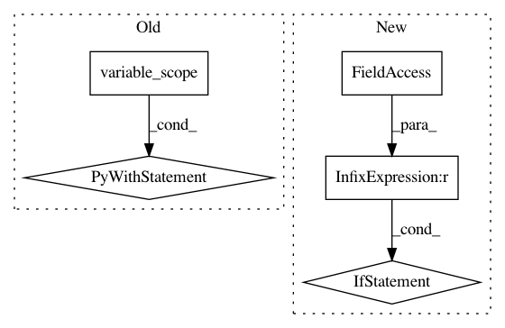

2e0f0929df4b01b269962a6423d6cb78b6d3da17,tensorlayer/layers/inputs.py,EmbeddingInput,__init__,#EmbeddingInput#Any#Any#Any#Any#Any#Any#,280
Before Change
logging.info("EmbeddingInput %s: (%d, %d)" % (self.name, vocabulary_size, embedding_size))
with tf.variable_scope(name):
embeddings = tf.get_variable(
name="embeddings", shape=(vocabulary_size, embedding_size), initializer=E_init,
dtype=LayersConfig.tf_dtype, **self.E_init_args
)
self.outputs = tf.nn.embedding_lookup(embeddings, self.inputs)
self._add_layers(self.outputs)
self._add_params(embeddings)
After Change
self.dtype = dtype
logging.info("OneHotInput %s: %s" % (self.name, str(inputs.shape.as_list())))
if self.depth is None:
raise RuntimeError(self.__class__.__name__ + ": depth == None the number of output units is undefined")
def build(self, inputs):
pass
def forward(self, inputs):
In pattern: SUPERPATTERN
Frequency: 3
Non-data size: 5
Instances
Project Name: tensorlayer/tensorlayer
Commit Name: 2e0f0929df4b01b269962a6423d6cb78b6d3da17
Time: 2018-12-04
Author: dhsig552@163.com
File Name: tensorlayer/layers/inputs.py
Class Name: EmbeddingInput
Method Name: __init__
Project Name: asyml/texar
Commit Name: 4287aef6a3a82436b4e3e156b22ede235eb4e6ba
Time: 2017-12-11
Author: shore@pku.edu.cn
File Name: texar/modules/decoders/transformer_decoders.py
Class Name: TransformerDecoder
Method Name: __init__
Project Name: asyml/texar
Commit Name: 269e11a506f1dfa80d95f27b3e2d3df845c80ae3
Time: 2017-12-09
Author: zhiting.hu@petuum.com
File Name: texar/modules/encoders/transformer_encoders.py
Class Name: TransformerEncoder
Method Name: __init__